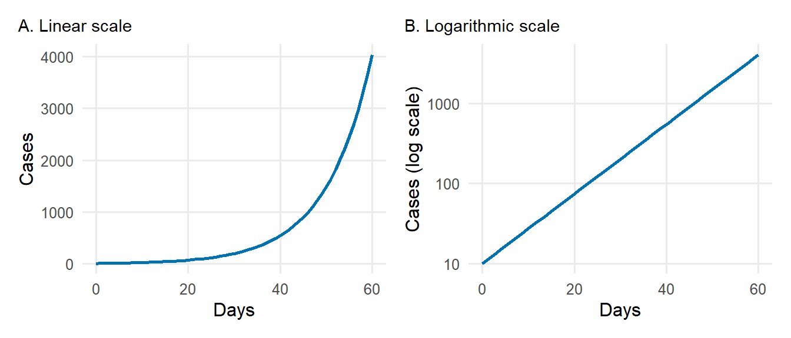
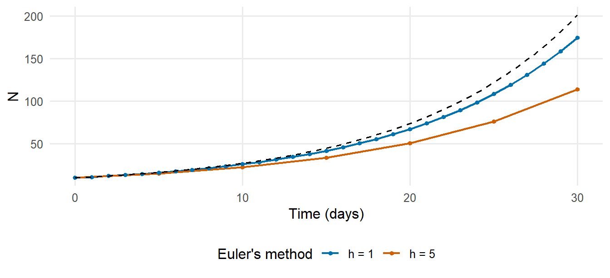
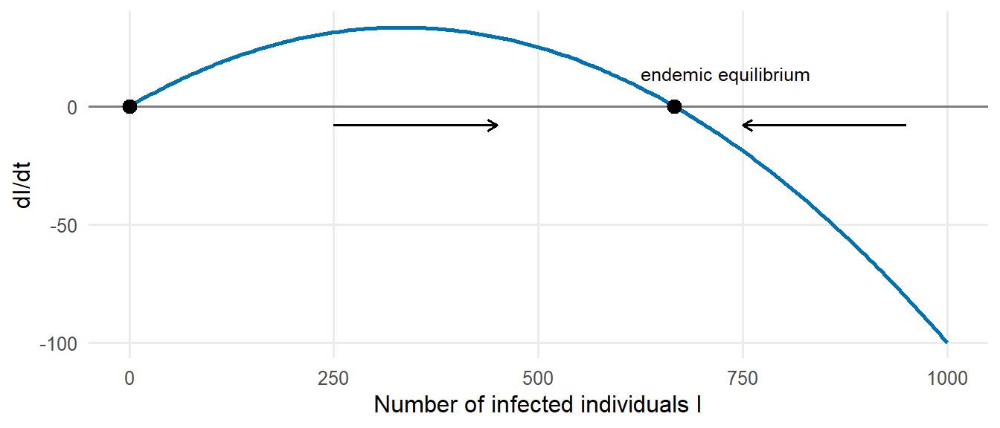

library(tidyverse)P3 Mathematical background
Preliminary learning — mathematics for infectious disease modelling
No mathematics beyond secondary-school level is assumed. The emphasis is on interpretation rather than on derivation: in this book, all equations are solved numerically in R.
P3.1 Notation, exponentials and logarithms
| Notation | Meaning |
|---|---|
| \(\sum_{i=1}^{n} x_i\) | the sum \(x_1 + x_2 + \dots + x_n\) |
\(e^{x}\), exp(x) |
the exponential function, with \(e \approx 2.718\) |
\(\ln x\), log(x) |
the natural logarithm, the inverse of the exponential: \(\ln(e^x) = x\) |
| \(\frac{dx}{dt}\) | the derivative of \(x\) with respect to time: the rate of change of \(x\) |
| \(\int_0^T f(t)\, dt\) | the integral of \(f\) from 0 to \(T\): the area under the curve |
| \(\lambda\), \(\beta\), \(\gamma\), \(\sigma\), \(\mu\) | Greek letters commonly used for rates (lambda, beta, gamma, sigma, mu) |
Useful properties of logarithms are \(\ln(ab) = \ln a + \ln b\), \(\ln(a^b) = b \ln a\) and \(\ln 2 \approx 0.693\). In R, log() is the natural logarithm and log10() the logarithm with base 10.
P3.2 Rates, probabilities and durations
A rate is the number of events per unit of time per individual at risk (e.g. recoveries per infectious person per day). A probability is dimensionless and refers to a specified period. If events occur at a constant rate \(r\), then:
- the probability that the event occurs within a period \(t\) is \(p = 1 - e^{-r t}\);
- the mean time until the event is \(1/r\);
- conversely, a probability \(p\) over a period \(t\) corresponds to the rate \(r = -\ln(1-p)/t\).
For small values of \(r t\), \(p \approx r t\).
gamma <- 1 / 7 # recovery rate: mean infectious period of 7 days
1 - exp(-gamma * 1) # probability of recovery within one day## [1] 0.13312211 - exp(-gamma * 7) # probability of recovery within 7 days (not 1!)## [1] 0.6321206p_annual <- 0.05 # 5% annual probability of an event
-log(1 - p_annual) # corresponding annual rate## [1] 0.05129329When an individual can leave a state through several routes with rates \(r_1, r_2, \dots\) (competing events), the total exit rate is \(r_1 + r_2 + \dots\), the mean time in the state is \(1/(r_1 + r_2 + \dots)\), and the probability of leaving through route \(i\) is \(r_i / (r_1 + r_2 + \dots)\). For instance, if patients with active tuberculosis self-cure at rate 0.2 per year, die at rate 0.2 per year and are diagnosed and treated at rate 0.6 per year:
rates <- c(selfcure = 0.2, death = 0.2, diagnosis = 0.6)
1 / sum(rates) # mean duration of disease (years)## [1] 1rates / sum(rates) # probability of each outcome## selfcure death diagnosis
## 0.2 0.2 0.6P3.3 Exponential growth and decay
If each individual generates new individuals at a constant per capita rate \(r\), the number grows exponentially:
\[ N(t) = N_0 \, e^{r t}. \]
With \(r < 0\) the number declines (exponential decay). Taking logarithms gives \(\ln N(t) = \ln N_0 + r t\), a straight line with slope \(r\). This is why epidemic curves are often displayed on a logarithmic scale, and why the growth rate is estimated by regression of the logarithm of the counts on time (course book: Estimation of the reproduction number from the growth rate). The doubling time follows from \(e^{r T_d} = 2\):
\[ T_d = \frac{\ln 2}{r}. \]
r <- 0.1 # growth rate per day
log(2) / r # doubling time (days)## [1] 6.931472exp(r * 30) # multiplication factor after 30 days## [1] 20.08554
P3.4 Derivatives: rates of change
The derivative \(\frac{dx}{dt}\) is the instantaneous rate of change of a quantity \(x\) with respect to time: the slope of the curve \(x(t)\) at time \(t\). It can be approximated by the change over a short interval \(h\):
\[ \frac{dx}{dt} \approx \frac{x(t + h) - x(t)}{h}. \]
Two results are sufficient for this book:
- the derivative of a constant is zero;
- the derivative of \(N_0 e^{r t}\) is \(r N_0 e^{r t}\), i.e. \(r\) times the function itself. Exponential growth is therefore the solution of \(\frac{dN}{dt} = r N\).
N_fun <- function(t) 10 * exp(0.1 * t)
h <- 1e-4
(N_fun(20 + h) - N_fun(20)) / h # numerical derivative at t = 20## [1] 7.3890930.1 * N_fun(20) # exact derivative: r * N(20)## [1] 7.389056P3.5 Differential equations and their numerical solution
A differential equation specifies the rate of change of a quantity as a function of the quantity itself and of time, for instance \(\frac{dI}{dt} = \beta S I / N - \gamma I\). Its solution is the function \(I(t)\) that satisfies the equation for given initial values. Compartmental models consist of a system of such equations, one for each compartment (course book: The SIR model).
Most systems of differential equations cannot be solved analytically and are solved numerically. The simplest method, Euler’s method, advances the solution in small time steps \(h\), using the derivative to approximate the change during each step:
\[ x(t + h) \approx x(t) + h \, \frac{dx}{dt}(t). \]
The following code applies Euler’s method to \(\frac{dN}{dt} = 0.1 N\), for which the exact solution \(N(t) = 10 e^{0.1 t}\) is known:
euler <- function(h, t_end = 30, N0 = 10, r = 0.1) {
times <- seq(0, t_end, by = h)
N <- numeric(length(times)); N[1] <- N0
for (k in 2:length(times)) {
N[k] <- N[k - 1] + h * r * N[k - 1] # x(t + h) = x(t) + h * dx/dt
}
tibble(time = times, N = N, step = paste("h =", h))
}
c(euler_h5 = last(euler(5)$N), euler_h1 = last(euler(1)$N),
euler_h0.1 = last(euler(0.1)$N), exact = 10 * exp(0.1 * 30))## euler_h5 euler_h1 euler_h0.1 exact
## 113.9062 174.4940 197.8847 200.8554
The error of Euler’s method decreases as the step size decreases. The function ode() of the deSolve package, used throughout this book, applies more accurate methods that adapt the step size automatically (course book: Solving the SIR model in R). The discrete-time SIR model of course book: From model equations to code is equivalent to Euler’s method with a step of one day.
P3.6 Equilibria and stability
An equilibrium is a state in which all derivatives are zero, so that the system no longer changes. Consider the SIS model, in which infected individuals return to the susceptible state on recovery:
\[ \frac{dI}{dt} = \beta I \frac{N - I}{N} - \gamma I. \]
Setting \(\frac{dI}{dt} = 0\) gives two equilibria: \(I^* = 0\) (no infection) and \(I^* = N(1 - \gamma/\beta) = N(1 - 1/R_0)\), with \(R_0 = \beta/\gamma\). The second equilibrium exists (is positive) only if \(R_0 > 1\).
An equilibrium is stable if the system returns to it after a small perturbation. This can be assessed from the sign of the derivative near the equilibrium: in Figure 3, \(dI/dt\) is positive below the endemic equilibrium and negative above it, so that \(I\) moves towards the endemic equilibrium from either side, which is therefore stable; the disease-free equilibrium is unstable when \(R_0 > 1\).

P3.7 Integrals: from rates to totals
The integral of a rate over time gives a total. For example, the cumulative number of infections between times 0 and \(T\) is the integral of the incidence, i.e. the area under the incidence curve. When a function is available at regular time points, the integral is approximated by the sum of the values multiplied by the time step:
dt <- 0.25
t <- seq(0, 10, by = dt)
incidence <- 100 * exp(-0.3 * t) # new cases per day
sum(incidence) * dt # approximate cumulative cases## [1] 330.0084100 / 0.3 * (1 - exp(-0.3 * 10)) # exact integral## [1] 316.7376P3.8 Vectors and matrices
Models with several population groups (age groups, districts, risk groups) use vectors and matrices. A matrix–vector product combines each row of the matrix with the vector: if \(C\) is a contact matrix and \(\mathbf{y}\) a vector of the proportions infectious in each group, then the product \(C\mathbf{y}\) gives the number of infectious contacts made by an individual in each group.
C <- matrix(c(12, 4, # contacts of children with children, adults
3, 8), # contacts of adults with children, adults
nrow = 2, byrow = TRUE,
dimnames = list(c("children", "adults"), c("children", "adults")))
prop_infectious <- c(children = 0.02, adults = 0.005)
C %*% prop_infectious # infectious contacts per day, by group## [,1]
## children 0.26
## adults 0.10For a square matrix \(K\), an eigenvalue \(\rho\) and eigenvector \(\mathbf{v}\) satisfy \(K\mathbf{v} = \rho\mathbf{v}\): multiplication by \(K\) only rescales \(\mathbf{v}\). If \(K\) is the next-generation matrix, whose element \(K_{ij}\) is the number of infections in group \(i\) caused by one infectious individual in group \(j\), then repeated multiplication describes successive generations of infection. After a few generations, the number of cases is multiplied in each generation by the dominant eigenvalue of \(K\), which is therefore the basic reproduction number \(R_0\) (course book: Adding realism to models).
K <- matrix(c(2.0, 0.5,
0.6, 0.8), nrow = 2, byrow = TRUE)
eigen(K)$values # the dominant (largest) eigenvalue is R0## [1] 2.2124038 0.5875962cases <- c(1, 0) # one infected child
for (g in 1:6) {
new_cases <- K %*% cases
cat("generation", g, ": ratio =", round(sum(new_cases) / sum(cases), 3), "\n")
cases <- new_cases
}## generation 1 : ratio = 2.6
## generation 2 : ratio = 2.3
## generation 3 : ratio = 2.235
## generation 4 : ratio = 2.218
## generation 5 : ratio = 2.214
## generation 6 : ratio = 2.213P3.9 Solving equations and optimisation numerically
Two numerical tasks occur repeatedly in this book:
- finding the root of an equation, i.e. the value at which a function equals zero, with
uniroot()— for instance the final size equation \(z = 1 - e^{-R_0 z}\) (course book: The SIR model); - minimising or maximising a function, with
optimize()(one parameter) oroptim()(several parameters) — for instance to estimate model parameters by maximum likelihood (course book: Linking models to data).
# Root: final size for R0 = 2
uniroot(function(z) z - (1 - exp(-2 * z)), interval = c(0.01, 1))$root## [1] 0.7968216# Minimisation: the value of a that minimises (a - 3)^2 + 1
optimize(function(a) (a - 3)^2 + 1, interval = c(0, 10))$minimum## [1] 3
NoteSolution
# 1
rate <- 1 / 8; c(rate = rate, p_still_infectious = exp(-rate * 14))## rate p_still_infectious
## 0.1250000 0.1737739# 2
r <- log(2) / 4; c(r = r, cases_after_21_days = 20 * exp(r * 21))## r cases_after_21_days
## 0.1732868 761.0925536# 3
I <- numeric(21); I[1] <- 100
for (k in 2:21) I[k] <- I[k - 1] + 1 * (-0.2 * I[k - 1])
c(euler = I[21], exact = 100 * exp(-0.2 * 20))## euler exact
## 1.152922 1.831564# 4
10000 * (1 - 0.2 / 0.25)## [1] 2000# 5
max(eigen(matrix(c(1.5, 0.3, 0.4, 0.6), 2, byrow = TRUE))$values)## [1] 1.617891P3.10 Self-assessment
P3.11 Additional resources
- Vynnycky and White (2010), chapters 2–3 and their online model files — an introduction to the mathematics of infectious disease models, written for epidemiologists.
- Otto and Day (2007): A Biologist’s Guide to Mathematical Modeling in Ecology and Evolution — a thorough introduction to differential equations, equilibria, stability and matrices for life scientists (chapters 1–5 and the primers on calculus and linear algebra).
- Bodine et al. (2014): Mathematics for the Life Sciences — calculus and linear algebra with biological applications.
- Strogatz (2015): Nonlinear Dynamics and Chaos — an accessible treatment of equilibria and stability (chapters 1–2) for participants who wish to study further.
- OpenStax, Precalculus 2e, chapter 6 (Exponential and logarithmic functions) — a free introductory textbook (https://openstax.org/details/books/precalculus-2e).
- Imperial College London, Infectious Disease Modelling specialisation (Coursera; free to audit), in particular the first course, which introduces differential equations through the SIR model (https://www.coursera.org/specializations/infectious-disease-modelling).
- Khan Academy, courses on exponential functions, logarithms, differential calculus and matrices (https://www.khanacademy.org/math).